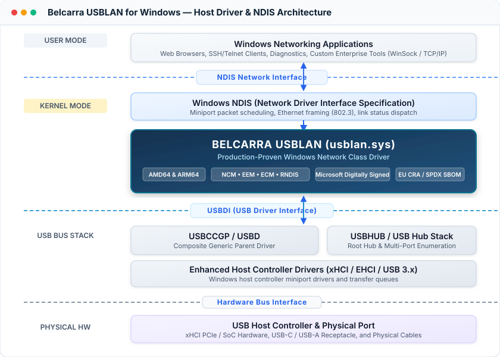

Driver Overview
Belcarra USBLAN for Windows is a combined Windows Driver Model (WDM) lower-edge and Network Driver Interface Specification (NDIS) miniport driver. It enables the simple creation and management of an Ethernet-compatible network interface over a physical USB connection to a vendor device using industry-standard USB networking protocols.
When an OEM device connects, USBLAN binds to the designated network function and exposes a standard Layer 2 network adapter to the Windows networking stack, routing native IP traffic seamlessly across the USB bus.
Why USB Networking Instead of Traditional Serial?
While serial communication (such as USB CDC-ACM or virtual COM ports) is historically common in embedded hardware, modern smart devices require an Ethernet-like networking model over USB:
- Dramatically Higher Throughput: Ethernet-over-USB takes full advantage of High-Speed and SuperSpeed USB bandwidth, eliminating legacy serial baud-rate bottlenecks.
- Zero-Privilege Web Server Access: A major deployment advantage is that the host PC can connect directly to an on-device embedded web server (e.g.,
http://192.168.x.x) or REST API through a standard browser without requiring Windows administrative privileges or specialized host software. - Standard IP Stack Integration: Enables standard network services—including IPv4, IPv6, DHCP, DNS, SSH, mDNS, and socket communications—directly over the USB cable.
Composite USB Device Decomposition
In USB specifications, networking is one possible function of an attached peripheral:
- Dedicated Network Device: The networking function can utilize the entire USB link and all available endpoints.
- Composite Sub-Function: The device can decompose into multiple concurrent sub-functions. USBLAN binds specifically to the networking interface (MI), allowing other sub-functions—such as CDC-ACM serial, Audio, or Mass Storage—to operate simultaneously over the same physical cable.
Low-Level Transfer Mechanics (IEEE 802.2)
Networking over USB operates at the IEEE 802.2 frame level. In simplest terms, raw Ethernet frames are packaged and transferred over the USB link:
- BULK Endpoints: Data is transmitted and received across high-speed USB BULK endpoints using asynchronous USB transfers.
- Multi-Frame Packing: USB low-level transfers bundle one or more complete network frames along with protocol-specific framing data, NTB headers, and transfer metadata for maximum efficiency and minimal CPU overhead.
Current primary target
- Windows 11 amd64
- Windows 11 arm64
- Windows 10 amd64 (Note: ARM64 is supported on Windows 11 only)
Protocol coverage
- CDC-NCM
- CDC-EEM
- CDC-ECM
- RNDIS
Host Driver Architecture
The diagram below illustrates the relationship between Windows networking applications, the NDIS boundary, the Belcarra USBLAN kernel-mode driver (usblan.sys), the Windows USB bus driver stack, and the physical USB host controller:

Operational model
- For each connected device instance, USBLAN creates a Layer 2 network interface over USB transfer frames.
- Turnkey nested installation kits make USBLAN simple to use for OEMs and for their end customers, supporting branded pre-installation and silent deployment.
- Plug-and-play installation from a local driver store or Windows Update (based on kit configuration).
- Optional built-in DHCP service to coordinate host/device IPv4 addressing on point-to-point USB segments.
- Supports composite devices by matching the interface (MI) for the network sub-function.
Engineering features
- IPv4 and IPv6 support
- Power management support (sleep, standby, hibernation, resume)
- Microsoft digital driver signing and verification compatibility
- Multiple simultaneous USB devices (up to sixteen per host)
USB Vendor ID (VID) and Product ID (PID) Requirements
Windows device enumeration and Plug-and-Play (PnP) driver matching rely on the 16-bit Vendor Identification Number (VID) and 16-bit Product Identification Number (PID) presented by your USB device descriptors:
- Vendor ID (VID): Issued exclusively by the USB Implementers Forum (USB.org). Commercial hardware manufacturers must obtain an official VID to guarantee global uniqueness and prevent host driver conflicts.
- Product ID (PID): Assigned by the OEM to identify specific hardware devices, models, or firmware personalities. Each VID permits up to 65,536 unique PIDs (
0x0000–0xFFFF). - Turnkey OEM Driver Packaging: Belcarra integrates your official VID and assigned PID into customized, Microsoft-signed Windows INF packages, ensuring seamless plug-and-play installation on Windows 11 (AMD64 & ARM64) and Windows 10. Hardware teams can specify target IDs on the OEM Evaluation Driver Request Form.
Ready to Integrate USBLAN into Your Hardware?
Accelerate your product launch with a complete OEM evaluation kit and customized Windows 11 driver binaries branded with your USB-IF Vendor ID and Product ID.
Request an OEM Evaluation Kit →